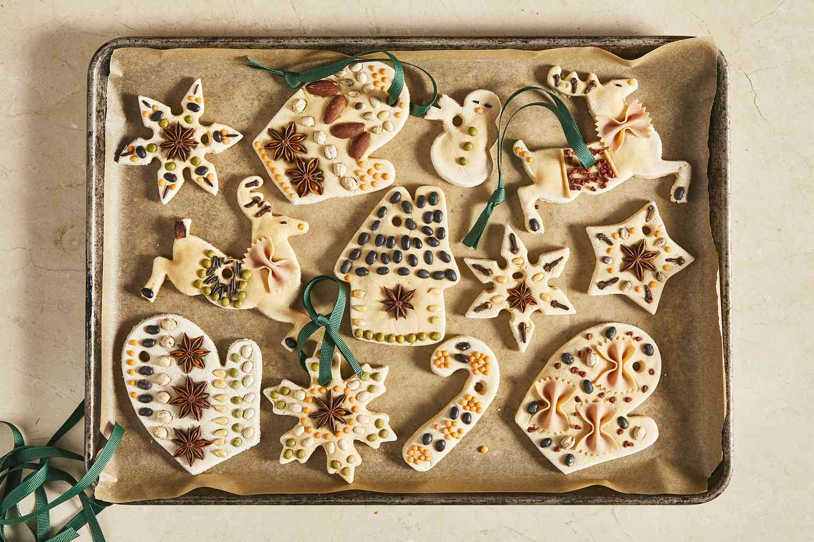

This salt dough recipe is much like Play-Doh but can be baked to a permanent finish. The dough can be mixed with food coloring before modeling or painted afterward. Great for making Christmas ornaments for the tree!
Salt dough is a malleable dough made with flour, water, and salt. Since it doesn't crumble or crack and it's easy to dry in the oven or microwave, salt dough is a popular DIY material for homemade crafts and ornaments.
Decorate your baked and cooled salt dough shapes with paint, then preserve them with a craft sealer (such as Mod Podge) or spray sealant coating. Allow the sealant to dry completely before storage.
If you preserve salt dough properly, it will last for decades. Without sealant, it will begin to crumble after a few weeks.
When it comes to storing your salt dough ornaments, it's important to avoid heat and humidity. Choose a cool, dry place and opt for a sturdy container for the best protection. For the best protection, wrap each ornament in wax paper before you store them away.